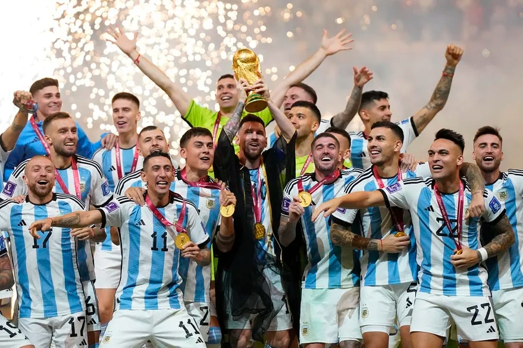
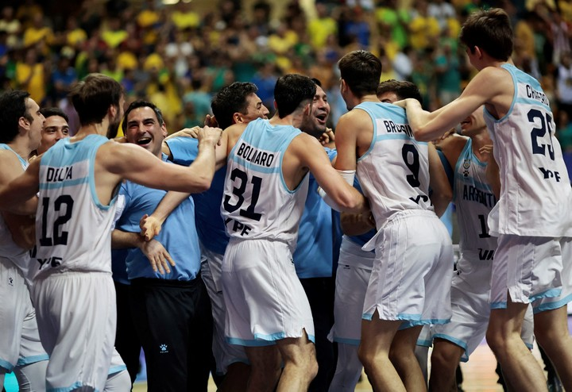
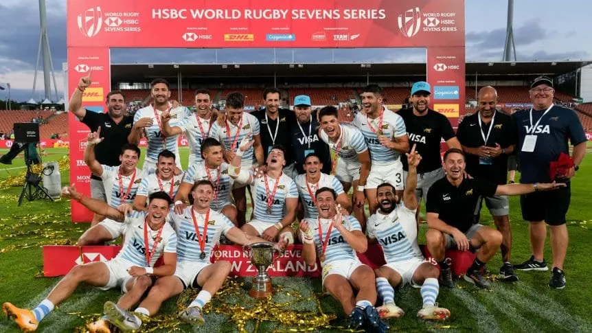
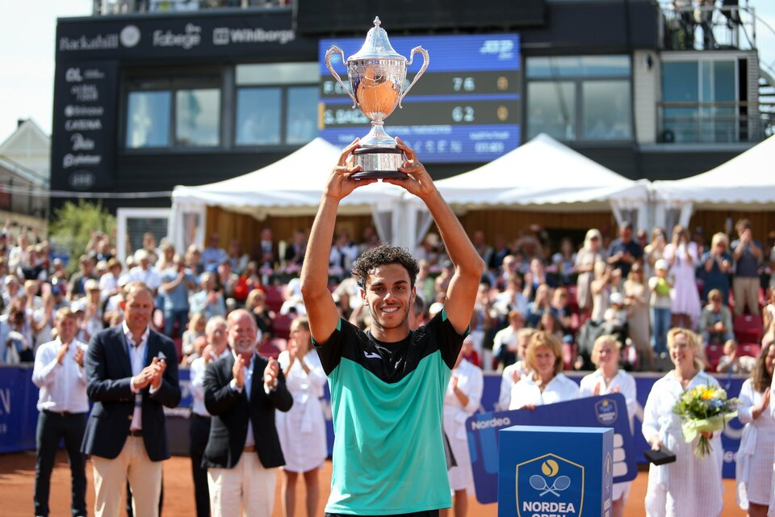

Z P O R T Z
FUTBOL
Argentina campeon del mundial Qatar 2022
La albiceleste de Lionel Messi consiguio la gloria maxima tras el triunfo por penales ante Francia en en el lusail stadium luego de igualar 3-3 en los 120 minutos. Jugo un enorme partido hasta el descuento de Mbappe y no merecio sufrir. El haberse impuesto en la mejor final de la historia no hizo mas que inyectarle epica a una conquista trabajada, sufrida y cargada de mistica. Se trata de la tercera estrella para la seleccion y la primera para el astro rosarino.
BASKET
Argentina campeon de la copa intercontinental
Unos días antes de llegar a Recife, el panorama de la Selección Argentina parecía complicado. Si bien el plantel siempre se mantuvo unido y tenía como objetivo hacer una gran Americup, el cambio de entrenador con la salida del Che García y la lesión de una pieza clave en defensa como Patricio Garino podía llegar a calar hondo a tan poco tiempo del torneo. Sin embargo, el equipo ahora dirigido por Pablo Prigioni viajó a Recife, se unió mucho más y se terminó consagrando como campeón invicto del torneo continental. Y no solo eso, sino que le arruinó la fiesta a Brasil en su casa: fue victoria agónica por 73-75.
RUGBY
Los Pumas, campeones del Seven de Hamilton ante los All Blacks y con una gran remontada
El seleccionado argentino de rugby se consagró campeón del Seven de Hamilton, tras derrotar en al final a los All Blacks por 14-12 en el Estadio FMG y con una gran remontada. Los Pumas obtuvieron de esta manera su primera conquista de la temporada en el circuito internacional.
TENIS
El fenómeno del tenis argentino: Francisco Cerúndolo, campeón en Bastad
El tenis nacional tuvo plena celebración: la victoria del mayor de los hermanos Cerúndolo representó el 227º título del circuito para la Argentina, quinta en el escalón mundial, con Guillermo Vilas como el máximo campeón con 62 coronas. Los números superan a gigantes como Gran Bretaña (103), Rusia (132), Suiza (145), Alemania (160) y Francia (172); y están sólo por debajo de Estados Unidos (1048), España (432), Australia (283) y Suecia (276).